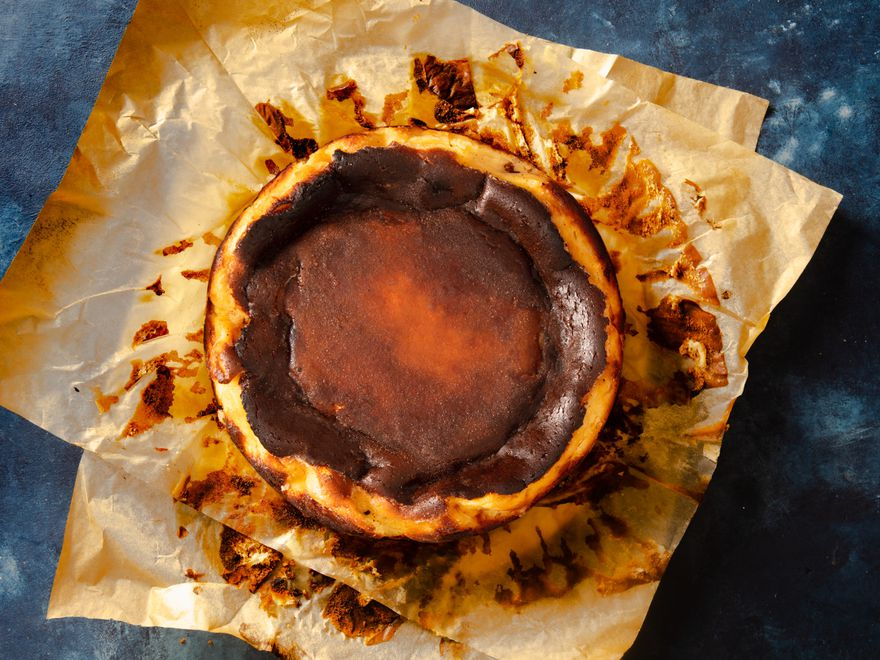

Basque Burnt Cheesecake
Ingredients
- 900 grams full-fat cream cheese
- 270 grams sugar
- 5 large eggs
- 2 yolks from 2 large eggs
- 230 grams of heavy cream
- 20 grams all-purpose flour
- 10 grams vanilla extract
Steps
- Adjust oven rack to middle position and preheat oven to 230°C. Cut two 12- by 16-inch pieces of parchment paper. Arrange the 12- by 16-inch pieces of parchment in an overlapping pattern to line a greased 9- by 3-inch springform cake pan, leaving at least 2 inches of parchment overhanging the rim of the pan on all sides. Set aside.
- Combine cream cheese and 270g sugar in the bowl of a stand mixer fitted with the paddle attachment. Mix on medium speed, scraping down sides of bowl as needed, until no lumps of cheese remain, sugar is dissolved, and mixture is smooth, 3 to 4 minutes.
- With the mixer still running, add eggs one at a time, beating for 10 seconds before adding the next. Add egg yolks, and beat until fully incorporated, about 15 seconds. Stop the mixer and scrape down sides of the bowl with a rubber spatula, making sure the mixture is smooth and homogenous.
- Add cream, flour, vanilla, salt, and lemon zest. Mix on medium speed until fully combined and smooth, about 30 seconds. Pour batter into prepared pan, and refrigerate for at least 30 minutes and up to 1 hour.
- When ready to bake, remove cake pan from refrigerator, set on a rimmed baking sheet, and sprinkle remaining 1 tablespoon (15g) sugar evenly over surface of batter. Bake cheesecake until surface is light brown and is beginning to set around the edges, 25 to 30 minutes. If needed, rotate baking sheet to ensure even browning.
- Increase oven temperature to 260°C and continue baking until surface is burnished milk chocolate-brown, and outer edge of cheesecake feels slightly firm, though the innermost ring of cheesecake will wobble quite freely if you shake the pan, 20 to 25 minutes longer. The cheesecake will be done when the very center registers between 65.5 to 68°C on an instant-read thermometer inserted to a depth of 2-inches.
- Let cheesecake cool in the pan at room temperature for at least 4 hours before unmolding. Unlatch springform pan and remove pan sides. Holding by parchment overhang, carefully transfer cake to a cutting board or serving plate. Gently peel back parchment from sides of cheesecake, and using a sharp knife, cut into wedges. Serve. Leftover cheesecake can be covered and refrigerated for up to 3 days. Allow cheesecake to come to room temperature before serving.